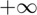
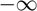
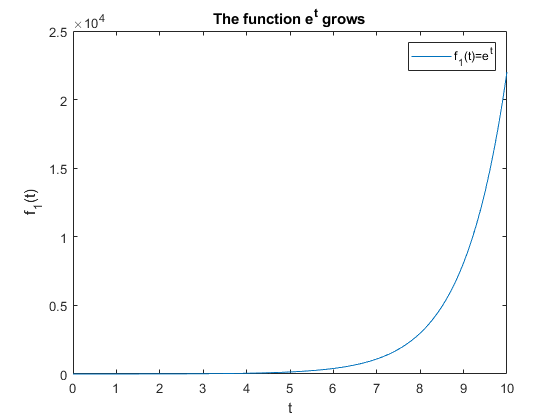
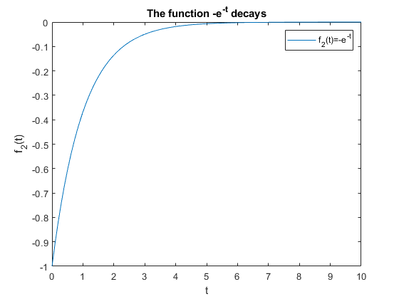
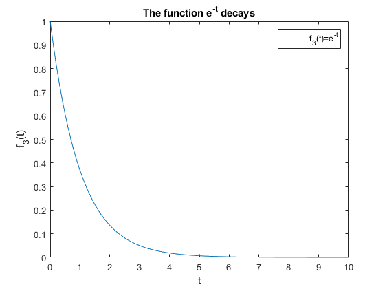
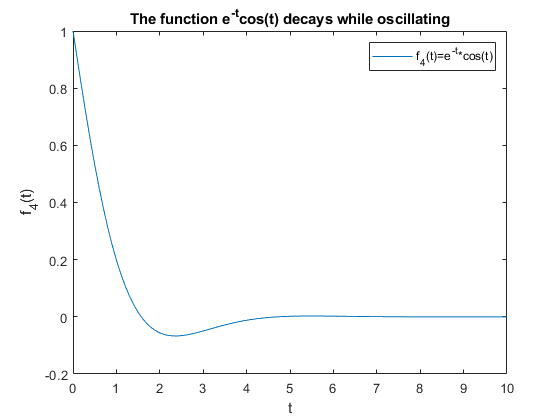
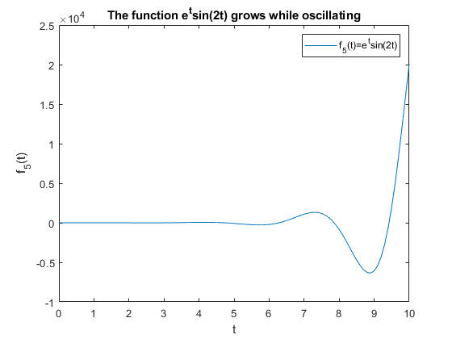
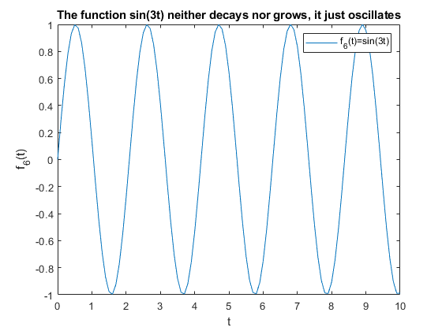
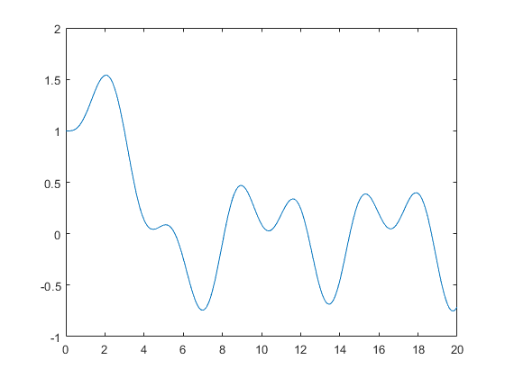

Second-Order Lab: Second-Order Linear DEs in MATLAB
In this lab, you will learn how to use iode to plot solutions of second-order ODEs. You will also learn to classify the behaviour of different types of solutions.
Moreover, you will write your own Second-Order ODE system solver, and compare its results to those of iode.
Opening the m-file lab5.m in the MATLAB editor, step through each part using cell mode to see the results.
There are seven (7) exercises in this lab that are to be handed in on the due date of the lab.
Contents
Student Information
Student Name: Patricia Nadia Krisanti
Student Number: 1009669404
Iode for Second-Order Linear DEs with constant coefficients
In the iode menu, select the Second order linear ODEs module. It opens with a default DE and a default forcing function f(t) = cos(2t). The forcing function can be plotted along with the solution by choosing Show forcing function from the Options menu.
Use this module to easily plot solutions to these kind of equations.
There are three methods to input the initial conditions:
Method 1. Enter the values for t0, x(t0), and x'(t0) into the Initial conditions boxes, and then click Plot solution.
Method 2. Enter the desired slope x'(t0) into the appropriate into the Initial conditions box, and then click on the graph at the point (t0,x(t0)) where you want the solution to start.
Method 3. Press down the left mouse button at the desired point (t0,x(t0)) and drag the mouse a short distance at the desired slope x'(t0). When you release the mouse button, iode will plot the solution.
Growth and Decay Concepts
We want to classify different kinds of behaviour of the solutions. We say that a solution:
grows if its magnitude tends to infinity for large values of t, that is, if either the solution tends to  or ,
decays if its magnitude converges to 0 for large values of t,
decays while oscillating if it keeps changing sign for large values of t and the amplitude of the oscillation tends to zero,
grows while oscillating if it keeps changing sign for large values of t and the amplitude of the oscillation tends to infinity.
Example
t = 0:0.1:10; % Example 1 figure(); y1 = exp(t); plot(t,y1) % Annotate the figure xlabel('t'); ylabel('f_1(t)'); title('The function e^t grows'); legend('f_1(t)=e^t'); % Example 2 figure(); y2 = -exp(-t); plot(t,y2) % Annotate the figure xlabel('t'); ylabel('f_2(t)'); title('The function -e^{-t} decays'); legend('f_2(t)=-e^{-t}'); % Example 3 figure(); y3 = exp(-t); plot(t,y3) % Annotate the figure xlabel('t'); ylabel('f_3(t)'); title('The function e^{-t} decays'); legend('f_3(t)=e^{-t}'); % Example 4 figure(); y4 = exp(-t).*cos(t); plot(t,y4) % Annotate the figure xlabel('t'); ylabel('f_4(t)'); title('The function e^{-t}cos(t) decays while oscillating'); legend('f_4(t)=e^{-t}*cos(t)'); % Example 5 figure(); y5 = exp(t).*sin(2*t); plot(t,y5) % Annotate the figure xlabel('t'); ylabel('f_5(t)'); title('The function e^{t}sin(2t) grows while oscillating'); legend('f_5(t)=e^{t}sin(2t)'); % Example 6 figure(); y6 = sin(3*t); plot(t,y6) % Annotate the figure xlabel('t'); ylabel('f_6(t)'); title('The function sin(3t) neither decays nor grows, it just oscillates'); legend('f_6(t)=sin(3t)'); % |Remark.| A function which |grows while oscillating| doesn't |grow|, % because it keeps changing sign, so it neither tends to $+\infty$ nor to % $-\infty$.     
Exercise 1
Objective: Use iode to solve second-order linear DEs. And classify them.
Details: Consider the ODE:
4y'' + 4 y' + 17 y = 0
(a) Use iode to plot six (6) numerical solutions of this equation with "random" initial data (use Method 3 above) and press-and-drag at various initial points, with some of the slopes being positive and some negative)
Use only initial points in the part of the window where 0<t<1 and -1<x<1 and take all initial slopes between -3 and +3.
Change the window to [0,10]x[-3,3]. Attach a cropped screenshot to your answers file.
(b) Based on the results of (a), state what percentage of solutions decay, grow, grow while oscillating, or decay while oscillating.
(c) Solve the DE and write the exact solution. Explain why this justifies your answer in (b).
%answer on docs
Exercise 2
Consider the ODE:
y'' + sqrt(3) y' - y/4 = 0
Repeat (a), (b), (c) from Exercise 1 with this DE.
%answer on docs
Exercise 3
Consider the ODE:
y'' + sqrt(3) y' + y/4 = 0
Repeat (a), (b), (c) from Exercise 1 with this DE.
%answer on docs
Example
Consider the ODE:
y'' + 2y' + 10y = 0
The solution is
y(t) = e^(-t) ( c1 cos(3t) + c2 sin(3t) )
From this, it is easy to see that all solutions decay while oscillating.
Similarly, for the equation
y'' - 2y' + 10y = 0
The solution is
y(t) = e^t ( c3 cos(3t) + c4 sin(3t) )
which grows while oscillating.
Exercise 4
Consider the fourth-order ODE:
y'''' + 2 y''' + 6 y'' + 2 y' + 5 y = 0
(a) Find the general solution for this problem. You can use MATLAB to find the roots of the characteristic equation numerically with roots.
(b) Predict what percentage of solutions with random initial data will grow, decay, grow while oscillating, and decay while oscillating. Explain.
p = [1 2 6 2 5]; r = roots(p) p = [1 2 10]; r = roots(p) syms a b t y r c d q=a*exp(-t)*cos(2*t) w=b*exp(-t)*(1i*sin(2*t)) y=c*cos(t) r=d*(1i*sin(t)) simplify(q+w+y+r)
r = -1.0000 + 2.0000i -1.0000 - 2.0000i 0.0000 + 1.0000i 0.0000 - 1.0000i r = -1.0000 + 3.0000i -1.0000 - 3.0000i q = a*cos(2*t)*exp(-t) w = b*sin(2*t)*exp(-t)*1i y = c*cos(t) r = d*sin(t)*1i ans = c*cos(t) + d*sin(t)*1i + a*exp(-t)*(2*cos(t)^2 - 1) + b*exp(-t)*cos(t)*sin(t)*2i
Exercise 5
Objective: Classify equations given the roots of the characteristic equation.
Details: Your answer can consist of just a short sentence, as grows or decays while oscillating.
Consider a second-order linear constant coefficient homogeneous DE with r1 and r2 as roots of the characteristic equation.
Summarize your conclusions about the behaviour of solutions for randomly chosen initial data when.
(a) 0 < r1 < r2
(b) r1 < 0 < r2
(c) r1 < r2 < 0
(d) r1 = alpha + beta i and r2 = alpha - beta i and alpha < 0
(e) r1 = alpha + beta i and r2 = alpha - beta i and alpha = 0
(f) r1 = alpha + beta i and r2 = alpha - beta i and alpha > 0
Numerical Methods for Second-Order ODEs
One way to create a numerical method for second-order ODEs is to approximate derivatives with finite differences in the same way of the Euler method.
This means that we approximate the first derivative by:
y'(t[n]) ~ ( y[n] - y[n-1] ) / h
and
y''(t[n]) ~ ( y'(t[n+1]) - y'(t[n]) ) / h ~ ( y[n+1] - 2 y[n] + y[n-1] ) / ( h^2 )
By writing these approximations into the ODE, we obtain a method to get y[n+1] from the previous two steps y[n] and y[n-1].
The method for approximating solutions is:
1. Start with y[0]=y0
2. Then we need to get y[1], but we can't use the method, because we don't have two iterations y[0] and y[-1](!!). So we use Euler to get
y[1] = y0 + y1 h
y1 is the slope given by the initial condition
3. Use the method described above to get y[n] for n=2,3,....
Exercise 6
Objective: Write your own second-order ODE solver.
Details: Consider the second-order ODE
y'' + p(t) y' + q(t) y = g(t)
Write a second-order ODE solver using the method described above.
This m-file should be a function which accepts as variables (t0,tN,y0,y1,h), where t0 and tN are the start and end points of the interval on which to solve the ODE, y0, y1 are the initial conditions of the ODE, and h is the stepsize. You may also want to pass the functions into the ODE the way ode45 does (check MATLAB lab 2). Name the function DE2_<UTORid>.m.
Note: you will need to use a loop to do this exercise.
%function [x,y]=DE2_krisanti(t0,tN,y0,y1,h, p,q,g)
Exercise 7
Objective: Compare your method with iode
Details: Use iode to plot the solution of the ODE y'' + exp(-t/5) y' + (1-exp(-t/5)) y = sin(2*t) with the initial conditions y(0) = 1, y'(0) = 0
Use the window to [0,20]x[-2,2] Without removing the figure window, plot your solution (in a different colour), which will be plotted in the same graph.
Comment on any major differences, or the lack thereof.
[t,y]=DE2_krisanti(0,20, 1,0,0.1,@(t) exp(-t/5), @(t)(1-exp(-t/5)), @(t) sin(2*t)) plot(t,y)
t =
Columns 1 through 7
0 0.1000 0.2000 0.3000 0.4000 0.5000 0.6000
Columns 8 through 14
0.7000 0.8000 0.9000 1.0000 1.1000 1.2000 1.3000
Columns 15 through 21
1.4000 1.5000 1.6000 1.7000 1.8000 1.9000 2.0000
Columns 22 through 28
2.1000 2.2000 2.3000 2.4000 2.5000 2.6000 2.7000
Columns 29 through 35
2.8000 2.9000 3.0000 3.1000 3.2000 3.3000 3.4000
Columns 36 through 42
3.5000 3.6000 3.7000 3.8000 3.9000 4.0000 4.1000
Columns 43 through 49
4.2000 4.3000 4.4000 4.5000 4.6000 4.7000 4.8000
Columns 50 through 56
4.9000 5.0000 5.1000 5.2000 5.3000 5.4000 5.5000
Columns 57 through 63
5.6000 5.7000 5.8000 5.9000 6.0000 6.1000 6.2000
Columns 64 through 70
6.3000 6.4000 6.5000 6.6000 6.7000 6.8000 6.9000
Columns 71 through 77
7.0000 7.1000 7.2000 7.3000 7.4000 7.5000 7.6000
Columns 78 through 84
7.7000 7.8000 7.9000 8.0000 8.1000 8.2000 8.3000
Columns 85 through 91
8.4000 8.5000 8.6000 8.7000 8.8000 8.9000 9.0000
Columns 92 through 98
9.1000 9.2000 9.3000 9.4000 9.5000 9.6000 9.7000
Columns 99 through 105
9.8000 9.9000 10.0000 10.1000 10.2000 10.3000 10.4000
Columns 106 through 112
10.5000 10.6000 10.7000 10.8000 10.9000 11.0000 11.1000
Columns 113 through 119
11.2000 11.3000 11.4000 11.5000 11.6000 11.7000 11.8000
Columns 120 through 126
11.9000 12.0000 12.1000 12.2000 12.3000 12.4000 12.5000
Columns 127 through 133
12.6000 12.7000 12.8000 12.9000 13.0000 13.1000 13.2000
Columns 134 through 140
13.3000 13.4000 13.5000 13.6000 13.7000 13.8000 13.9000
Columns 141 through 147
14.0000 14.1000 14.2000 14.3000 14.4000 14.5000 14.6000
Columns 148 through 154
14.7000 14.8000 14.9000 15.0000 15.1000 15.2000 15.3000
Columns 155 through 161
15.4000 15.5000 15.6000 15.7000 15.8000 15.9000 16.0000
Columns 162 through 168
16.1000 16.2000 16.3000 16.4000 16.5000 16.6000 16.7000
Columns 169 through 175
16.8000 16.9000 17.0000 17.1000 17.2000 17.3000 17.4000
Columns 176 through 182
17.5000 17.6000 17.7000 17.8000 17.9000 18.0000 18.1000
Columns 183 through 189
18.2000 18.3000 18.4000 18.5000 18.6000 18.7000 18.8000
Columns 190 through 196
18.9000 19.0000 19.1000 19.2000 19.3000 19.4000 19.5000
Columns 197 through 201
19.6000 19.7000 19.8000 19.9000 20.0000
y =
Columns 1 through 7
1.0000 1.0000 1.0000 1.0018 1.0069 1.0166 1.0318
Columns 8 through 14
1.0531 1.0806 1.1143 1.1534 1.1972 1.2444 1.2936
Columns 15 through 21
1.3429 1.3907 1.4349 1.4737 1.5051 1.5275 1.5393
Columns 22 through 28
1.5394 1.5268 1.5011 1.4621 1.4101 1.3457 1.2701
Columns 29 through 35
1.1848 1.0913 0.9918 0.8885 0.7835 0.6793 0.5780
Columns 36 through 42
0.4817 0.3925 0.3118 0.2410 0.1809 0.1320 0.0943
Columns 43 through 49
0.0676 0.0508 0.0430 0.0425 0.0477 0.0565 0.0669
Columns 50 through 56
0.0768 0.0842 0.0871 0.0840 0.0734 0.0544 0.0263
Columns 57 through 63
-0.0110 -0.0572 -0.1116 -0.1731 -0.2401 -0.3108 -0.3831
Columns 64 through 70
-0.4546 -0.5230 -0.5859 -0.6409 -0.6859 -0.7192 -0.7391
Columns 71 through 77
-0.7445 -0.7348 -0.7099 -0.6700 -0.6160 -0.5491 -0.4712
Columns 78 through 84
-0.3842 -0.2905 -0.1928 -0.0938 0.0037 0.0972 0.1841
Columns 85 through 91
0.2621 0.3294 0.3844 0.4261 0.4539 0.4678 0.4682
Columns 92 through 98
0.4560 0.4327 0.3998 0.3595 0.3139 0.2655 0.2167
Columns 99 through 105
0.1697 0.1268 0.0899 0.0605 0.0398 0.0287 0.0274
Columns 106 through 112
0.0356 0.0529 0.0779 0.1093 0.1452 0.1836 0.2221
Columns 113 through 119
0.2585 0.2904 0.3158 0.3325 0.3390 0.3339 0.3165
Columns 120 through 126
0.2864 0.2437 0.1891 0.1237 0.0492 -0.0326 -0.1191
Columns 127 through 133
-0.2079 -0.2962 -0.3812 -0.4602 -0.5306 -0.5899 -0.6363
Columns 134 through 140
-0.6681 -0.6843 -0.6841 -0.6677 -0.6354 -0.5883 -0.5278
Columns 141 through 147
-0.4560 -0.3752 -0.2878 -0.1967 -0.1047 -0.0145 0.0711
Columns 148 through 154
0.1498 0.2194 0.2781 0.3248 0.3586 0.3793 0.3871
Columns 155 through 161
0.3827 0.3674 0.3427 0.3106 0.2732 0.2329 0.1919
Columns 162 through 168
0.1526 0.1172 0.0874 0.0651 0.0512 0.0465 0.0514
Columns 169 through 175
0.0656 0.0884 0.1187 0.1549 0.1951 0.2371 0.2788
Columns 176 through 182
0.3175 0.3511 0.3772 0.3938 0.3992 0.3922 0.3718
Columns 183 through 189
0.3378 0.2902 0.2299 0.1579 0.0761 -0.0135 -0.1084
Columns 190 through 196
-0.2058 -0.3030 -0.3970 -0.4848 -0.5637 -0.6313 -0.6854
Columns 197 through 201
-0.7243 -0.7467 -0.7520 -0.7401 -0.7113
